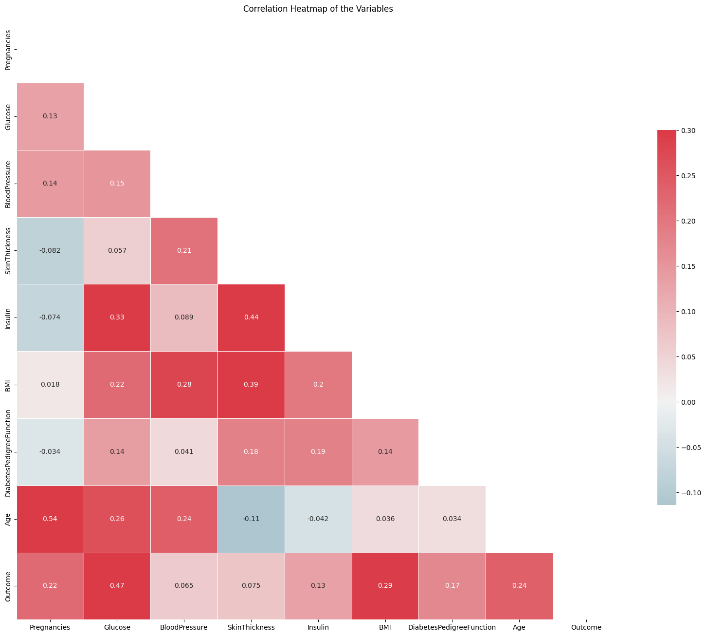
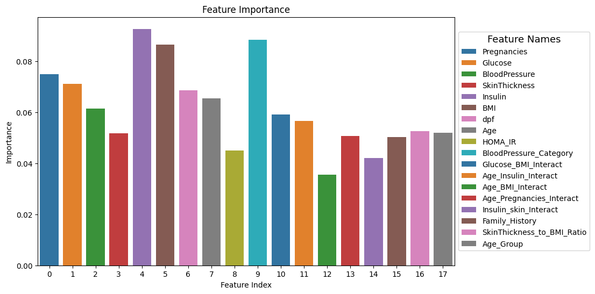
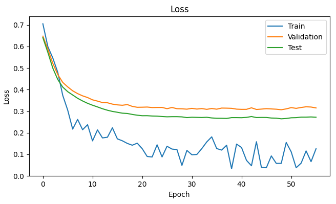
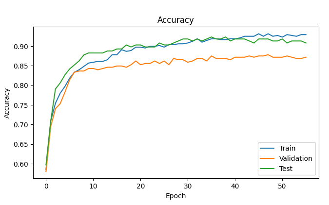

Pima Indians Diabetes Classification
DATA
The datasets consist of several medical predictor (independent) variables and one target (dependent) variable, Outcome. Independent variables include the number of pregnancies the patient has had, their BMI, insulin level, age, and so on.

PROCESS
The development of a predictive model has involved the implementation of the following procedural steps:
- After comprehensive data cleansing, the dataset has undergone thorough exploratory analysis. Each feature has been carefully examined to determine acceptable ranges and ensure data integrity.
- To enhance model performance, new features such as interactions between features have been integrated. The importance of these features has been evaluated using SHAP (Shapley Additive Explanations).
- SMOTE is an oversampling method specifically designed for minority classes, generating synthetic samples to address overfitting issues associated with random oversampling. By employing this technique, we augment the data points in the minority class, thereby enhancing the model's ability to effectively learn from imbalanced datasets.
- Various ML models have been implemented with Random Forest classifier scoring the highest with 93% accuracy. Random Forest feature importance can be seen from the image on the right hand side.
- The SHAP summary plot reveals the influential features driving our model's predictions. Notably, Low Insulin values and low interaction between age and Insulin values exhibit substantial influence, while features like Blood Pressure and number of pregnancies have minimal impact. Discarding these less impactful features can effectively reduce computational costs without compromising the model's predictive performance.
- A sequential model has also been implemented to check for its suitability for our use case. the accuracies and losses for test,train and validation sets are shown in the NN Model Evaluation picture. the deep learning model proved to be similar to the random forest performance.
- Following a comparative evaluation, the random forest (RF) model has been selected for deployment due to its performance similarity to the deep learning model. This decision is underpinned by the RF model's interpretability and its lightweight, scalable characteristics, making it a pragmatic choice over deep learning models which demand significant computational resources. To streamline the model's usability for prediction, a Streamlit application has been developed. This application seamlessly processes input data in the form of a pandas dataframe resembling the training dataset, conducting necessary preprocessing and feature engineering to enable predictions.
Exploratory Data Analysis (EDA):
Feature Engineering:
Synthetic Minority Oversampling Technique (SMOTE):
Model Implementation:
Deployment:

Feature distributions
Feature Correlation
Random Forest feature importance
 NN Model evaluation